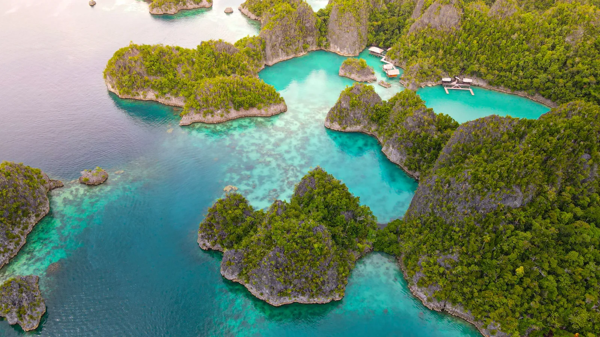

El mar más rico del planeta
Raja Ampat: karst, arrecifes y aves del paraíso
En el extremo oriental de Indonesia, Raja Ampat reúne alrededor del 75% de las especies de coral conocidas. Se recorre a bordo de un phinisi o un liveaboard privado, entre islas de piedra caliza cubiertas de selva que emergen de un mar turquesa. Bajo el agua están Cabo Kri, donde se llegaron a contar 374 especies de peces en una sola inmersión, y las mantas de Blue Magic; en la superficie, lagunas para recorrer en kayak, arrecifes accesibles con snorkel y, al amanecer en tierra firme, el ave del paraíso de Wilson, que solo vive en estas islas. Y la imagen que todo el mundo busca: los karst de Wayag vistos desde lo alto.
- Los karst de Wayag desde lo alto
- Snorkel y buceo en Cabo Kri y Blue Magic
- El ave del paraíso de Wilson al amanecer
CuándoDe octubre a abril, con el mar en calma.